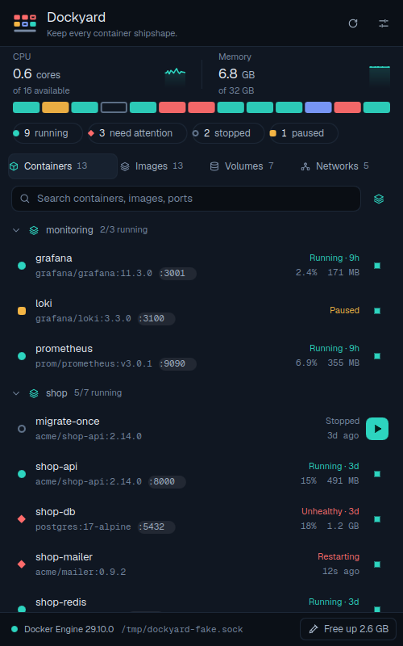
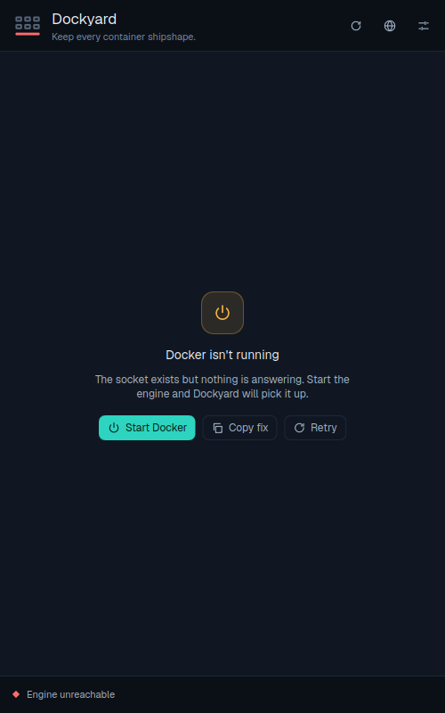
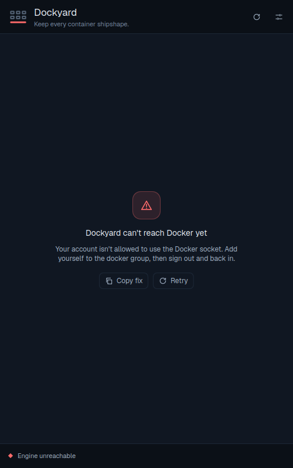

Docker et Podman, en bon ordre dans votre panneau KDE
Dockyard est un widget Plasma 6 gratuit et open source qui montre chaque conteneur d’un coup d’œil et permet de démarrer, arrêter, redémarrer, lire les journaux et nettoyer sans quitter le bureau. Conçu pour Fedora KDE.
Gratuit · Licence MIT · Aucune télémétrie · Docker, Docker rootless et Podman

Toute votre flotte, dessinée comme le manifeste de cargaison d’un navire
- En cours
- À surveiller
- En pause
- Arrêté
Chaque cellule est un conteneur, colorée selon son état. Les cellules gardent leur place quand un état change : un problème se remarque sans que vous le cherchiez. Cliquez sur une cellule et la liste saute à ce conteneur. Chaque état a aussi sa propre forme, pour rester lisible sans distinguer les couleurs.
Sachez avant que ça casse
CPU et mémoire de tout ce qui tourne, avec historique. Filtres en un clic : en cours, à surveiller, arrêtés. Quand un conteneur plante, devient en mauvaise santé ou redémarre en boucle, vous recevez une notification de bureau.
- Conteneurs groupés par projet Compose
- Démarrer, arrêter ou redémarrer tout un projet d’un coup
- CPU, mémoire et réseau en direct par conteneur

Tout ce que connaît le moteur
Images, volumes et réseaux sont à un onglet, avec des badges Utilisée et Inutilisée. Supprimez ce dont vous n’avez pas besoin ; si c’est encore utilisé, le moteur refuse et Dockyard vous dit pourquoi. Le panneau de nettoyage indique ce que chaque action supprime et l’espace libéré avant de confirmer.
- Images orphelines et inutilisées, volumes anonymes, cache de build
- Le nettoyage ne touche jamais aux volumes nommés
- Double confirmation plutôt que des boîtes de dialogue modales

Calme quand ça tourne mal
Docker arrêté, pas d’autorisation sur le socket, aucun moteur installé : Dockyard explique ce qui se passe en langage clair et donne la solution exacte, avec un bouton pour la copier ou pour démarrer Docker.
- Détecte automatiquement Docker, Docker rootless et Podman
- Ouvre les journaux en direct et colorés de n’importe quel conteneur
- Ouvre un shell dans un conteneur en un clic


Parle votre langue
Dockyard suit la langue de votre système, et le bouton globe du popup permet d’en changer à tout moment. Ajouter une langue demande un fichier et aucun code.

Tout est inclus
- Bande de manifeste: toute la flotte sur une rangée cliquable
- Métriques de la flotte: CPU et mémoire avec historique
- Compatible Compose: grouper, replier et agir sur des projets
- Journaux en direct: colorés, pause, copie
- Accès shell: bash ou sh dans Konsole
- Ports cliquables: ouvrir dans le navigateur ou copier l’adresse
- Images, volumes, réseaux: badges, filtres, suppression sûre
- Libérer de l’espace: chiffré et expliqué avant de confirmer
- Notifications: plantages, contrôles de santé en échec, boucles de redémarrage
- Sombre et clair: suit le jeu de couleurs et la police de Plasma
- Accessible: focus clavier partout, état aussi par la forme
- Plusieurs langues: au choix dans le widget, faciles à étendre
Installez sur Fedora KDE en moins d’une minute
Vérifiez les bases
KDE Plasma 6, Python 3 (déjà sur Fedora) et Docker ou Podman. Rien d’autre.
Installez le widget
Par utilisateur, sans root.
git clone https://github.com/phuonghx/dockyard cd dockyard && ./install.sh --restartAjoutez-le à votre panneau
Clic droit sur le panneau, choisissez Ajouter des composants graphiques, cherchez Dockyard et glissez-le. Pour l’essayer d’abord : plasmawindowed io.dockyard.widget.
Docker inaccessible ? Ajoutez-vous au groupe docker puis reconnectez-vous : sudo usermod -aG docker $USER. Pour Podman : systemctl --user enable --now podman.socket.
Mise à jour : git pull && ./install.sh. Désinstallation : ./install.sh --uninstall.
Questions fréquentes
Qu’est-ce que Dockyard ?
Dockyard est un widget gratuit et open source pour KDE Plasma 6. Il vit dans votre panneau et permet de surveiller et gérer conteneurs, images, volumes et réseaux Docker ou Podman, lire les journaux et libérer de l’espace disque, sans ouvrir de terminal ni d’application lourde.
Dockyard fonctionne-t-il avec Podman ?
Oui. Il trouve automatiquement Docker, Docker rootless et le socket compatible Docker de Podman, ou vous pouvez indiquer un chemin de socket dans les réglages du widget.
Quels systèmes sont pris en charge ?
Tout bureau Linux avec KDE Plasma 6, testé sur Fedora KDE. C’est un widget Plasma : il ne fonctionne pas sous GNOME ni sur d’autres bureaux.
Faut-il Docker Desktop ou d’autres logiciels ?
Non. Il faut Python 3 et un moteur Docker ou Podman en marche. Dockyard parle directement au socket local du moteur.
Est-ce sûr ? Envoie-t-il des données ?
Dockyard n’a aucune télémétrie et n’envoie rien ailleurs que vers le socket local de votre moteur. Il est sous licence MIT et le code est sur GitHub. Comme pour tout outil Docker, l’accès au socket Docker équivaut à root.
Comment obtenir l’autorisation d’utiliser Docker ?
Ajoutez votre utilisateur au groupe docker avec sudo usermod -aG docker $USER puis reconnectez-vous. Dockyard affiche cette commande exacte quand il détecte le problème.
Puis-je le traduire dans ma langue ?
Oui. Créez le modèle avec tools/i18n.sh new <langue>, traduisez le fichier avec n’importe quel éditeur et ouvrez une pull request. Aucune programmation. Voir le guide Translating dans CONTRIBUTING.md.
Libre et open source
Dockyard est sous licence MIT. Tickets, idées, traductions et pull requests sont les bienvenus.
Créé par
Xuan-Phuong Hoang, un développeur qui voulait que Docker dans son panneau Fedora KDE ait l’air, et se comporte, comme une partie du système.